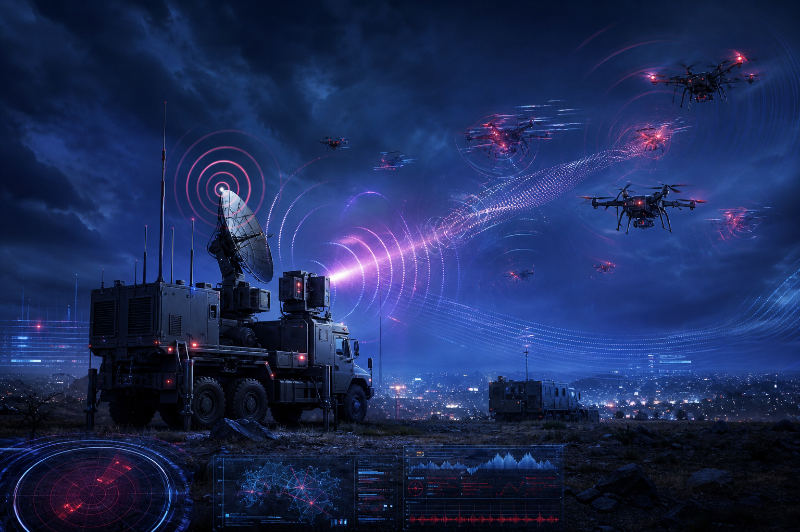

Introduction
J'ai choisi d'étudier les drones militaires et la guerre électronique, car ce sujet est au cœur des conflits actuels et transforme rapidement les stratégies de défense.
Presentation
Les armées utilisent de plus en plus des drones pour l'observation, le renseignement et certaines missions tactiques.
- Drones de reconnaissance et de surveillance
- Systèmes anti-drones pour protéger les bases et les espaces aériens
- Guerre électronique pour brouiller, détecter et neutraliser
Methodologie
- Sources institutionnelles françaises (Ministère des Armées, DGA)
- Analyses de sécurité et de défense (OTAN, RUSI)
- Veille hebdomadaire sur les évolutions drones/anti-drones
Article 1 - Drones et lutte anti-drones (Armée française)
Les publications du Ministère des Armées montrent une montée en puissance des expérimentations drones et anti-drones sur le terrain.
L'objectif est double : intégrer les drones dans les opérations tout en renforçant les capacités d'interception, de détection et de brouillage face aux menaces.
Impact : la maîtrise du couple drone/anti-drone devient un avantage opérationnel direct pour la protection des forces et des infrastructures sensibles.

Article 2 - Guerre électronique et cyberattaques sur les drones
Un drone fonctionne grâce à des ondes radio (commande, vidéo, GPS). Si on attaque ces ondes ou son logiciel, on peut le brouiller, le tromper ou en prendre le contrôle.
Les armées doivent donc protéger ces communications, et savoir attaquer celles de l'adversaire.
Pourquoi les drones sont attaqués
Les drones sont des cibles très intéressantes parce qu'ils sont à la fois utiles, exposés et faciles à perturber.
- Avantage militaire : abattre un drone, c'est enlever des yeux à l'adversaire.
- Renseignement : un drone transporte des images et des informations qui valent cher si on les récupère.
- Coût : un brouilleur coûte beaucoup moins cher qu'un drone, donc l'attaque est rentable.
- Effet psychologique : voir un drone tomber fait perdre confiance aux soldats et à la population.
- Beaucoup de points d'entrée : radio, GPS, logiciel, station de pilotage, satellite.
- Toujours exposés : les drones sont utilisés en combat, en frontière et autour des bases.
- Capture possible : un drone récupéré peut être étudié et copié.
Un drone peut être :
- Détourné par un hacker : il prend la main sur le drone et change sa trajectoire.
- Espionné : il récupère les images et les informations envoyées par le drone.
- Rendu inutilisable : on coupe le signal pour que le drone ne réponde plus.
Les signaux utilisés par un drone
Un drone utilise plusieurs signaux radio en même temps. Chacun peut être attaqué :
- Le signal de commande : ce que le pilote envoie au drone pour le diriger.
- Le signal vidéo : les images que le drone renvoie au pilote.
- Le signal GPS : il sert au drone à savoir où il se trouve.
- Le signal satellite : utilisé par les gros drones pour communiquer à très longue distance.
Méthodes utilisées pour attaquer un drone
- Brouillage : on envoie un signal très fort pour couvrir celui du drone. Il ne reçoit plus rien et tombe ou rentre tout seul.
- Faux signal GPS : on envoie un GPS plus fort que le vrai, le drone se croit ailleurs et change de chemin.
- Espionnage des images : on capte la vidéo du drone si elle n'est pas protégée.
- Prise de contrôle : on profite d'un défaut du logiciel pour envoyer des ordres à la place du pilote.
- Attaque du logiciel avant le vol : on modifie le programme du drone avant qu'il décolle.
- Drones reliés par un fil : certains drones récents sont contrôlés par un câble très fin et ne peuvent donc pas être brouillés.
Comment on protège un drone
- Communications protégées : les signaux sont chiffrés pour qu'on ne puisse pas les lire ni les modifier.
- Vérification d'identité : la station de pilotage et le drone se reconnaissent avant de communiquer.
- Changement de fréquence : le drone change souvent de canal radio pour qu'on ne puisse pas le suivre.
- GPS plus sûr : utilisation de plusieurs systèmes (GPS, Galileo) pour détecter les faux signaux.
- Logiciel protégé : seules les mises à jour officielles sont acceptées.
- Mode de secours : si le signal est perdu, le drone rentre tout seul à son point de départ.
À retenir : aujourd'hui, gagner avec des drones, ce n'est pas seulement avoir le meilleur appareil. C'est aussi protéger ses communications et savoir couper celles de l'adversaire.
Apports
- Compréhension des nouvelles formes de conflit technologique
- Vision concrète du rôle des drones dans les doctrines militaires modernes
- Importance de la guerre électronique pour conserver l'avantage tactique
Conclusion
La combinaison drones + guerre électronique est l'un des sujets militaires les plus stratégiques aujourd'hui. Cette veille montre que la supériorité opérationnelle dépend autant de la technologie que de la capacité à la protéger et à la contrer.